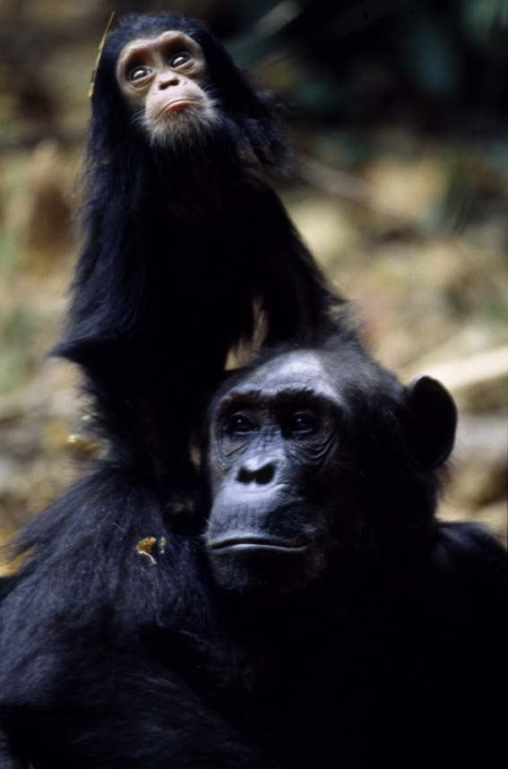

Images

Hello! My name is PETER H. MAPUNDA. I'm from DAR ES SALAAM, TANZANIA. I have a passion for travelling and Reading and enjoy exploring new ideas and experiences.
I currently work as a Programmer at Open University of tanzania. In my free time, I love to Read books and Travelling. My goal is to continually learn and grow, both personally and professionally.
In my spare time, I enjoy a variety of activities:
| Title | Author | Description |
|---|---|---|
| HISTORIA YA MAPAMBANO YA MTANZANIA | H.MAPUNDA | Tanzanian Historical life before, during the invension of colonial and the life on the independence. |
| UHURU NA UJAMAA | JK. Nyerere | ARUSHA declaration on 1967 . |
| MY LIFE MY PURPOSE | BENJAMIN MKAPA | His Excellency Benjamin Mkapa was Tanzanian’s third president, elected under the first multi-party general election in Tanzania. His memoirs range from his childhood, time as president, and his continuing post-retirement involvement on the international stage of development and peace mediation |